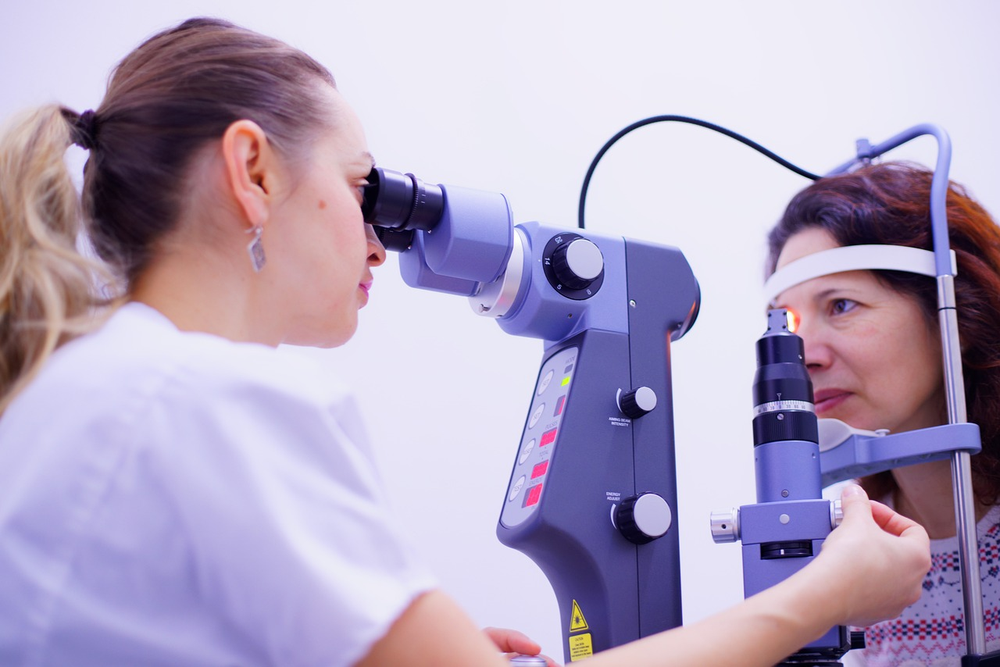

Cataracts
Facts surrounding Cataracts
Recognised as a leading cause of blindness worldwide, a cataract is described as a clouding of the normally clear lens of the eye. Once the lens becomes cloudy, the light which normaly passes though a clear lens becomes distorted before reaching the retina on the back of the eye1. This causes a drop in vision quality, ranging from reading difficulties in early stages up to complete blindness in one or both eyes, as stages get more severe.
Symptoms to look out for include2:
- Blured vision
- Sensitivity to light
- Reduced night vision
- Fading or ‘yellowing’ of colours
Who is at risk?
Cataracts usually develop as a part of the aging process. As a result, they are commonly seen in those aged 60 and above. By age 80, a majority of the population will experience some degree of cataract formation3.


How can cataracts be detected and treated?
Cataracts can be detected and diagnosed with regular eye examinations. If you notice any changes in your vision, contact your nearest OPSM to arrange an eye test or book online now. Our optometrists can give you advice on the best prevention.
Prevention treatment can involve having the cataract surgically removed from the eye. The surgery is performed using a local anesthetic and microsurgical techniques.
As with many eye diseases, early detection is the best way to aid treatment. If you’re concerned about your eye health, book an eye test or find out more about other common eye conditions and their symptoms.
BOOK AN EYE TEST